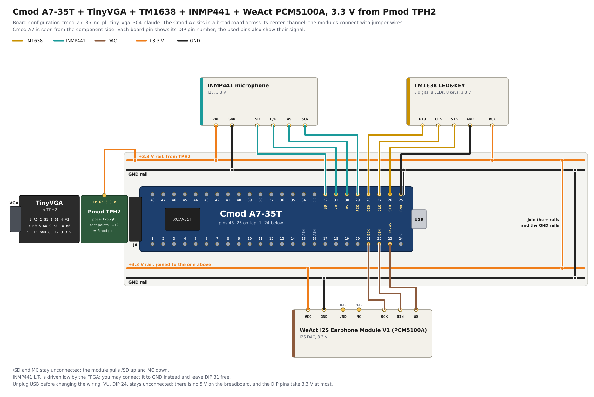
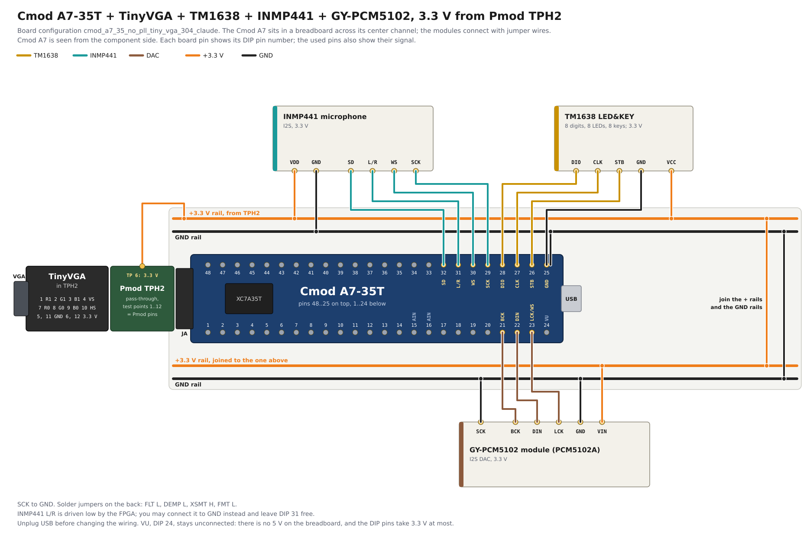
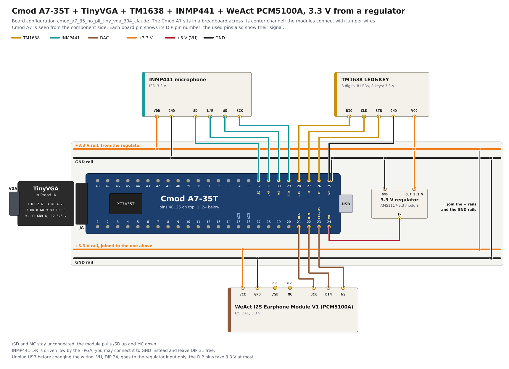
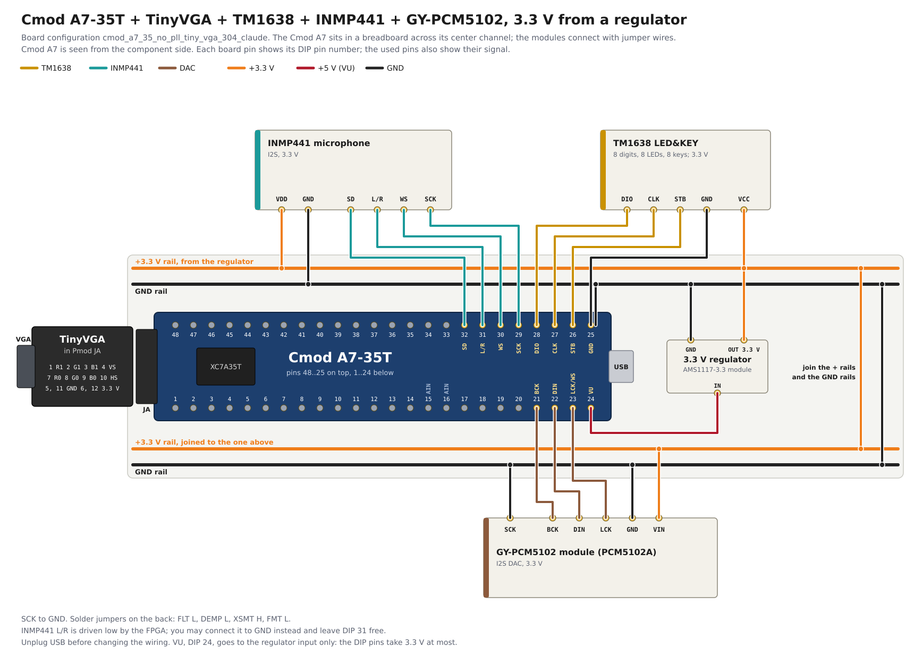

Создано Claude Opus 5.5 (claude-opus-5-5) в Claude Code 2.1.325, уровень усилий xhigh, по промпту Юрия Панчула. Дословный промпт — в приложении.
Cmod A7-35T без MMCM: TinyVGA 304x480 со стандартными частотами
Конфигурация платы cmod_a7_35_no_pll_tiny_vga_304_claude. English version: README.md.
Эта конфигурация использует оборудование и соединения cmod_a7_35_claude: Digilent Cmod A7-35T на макетной плате с TinyVGA, TM1638, микрофоном INMP441 и ЦАП I2S. Отличается только проект для ПЛИС. В нём нет генератора тактовой частоты, ни MMCM, ни PLL: весь проект работает от кварцевого генератора Cmod A7 на 12 МГц.
Стандартной картинке 640x480 при 60 Гц нужна частота пикселей 25,175 МГц, которую из 12 МГц без генератора тактовой частоты не получить. Здесь частота пикселей — сами 12 МГц, а каждая часть строки сохраняет свою стандартную длительность, поэтому частоты строк и кадров — как у 640x480: 31,50 кГц и 59,99 Гц. Упражнения рисуют на экране 304x480, а монитор, который принимает сигнал за 640x480, показывает каждый пиксель шириной 2,1 пикселя из 640: одни пиксели выглядят шириной 2, другие 3.
Содержание
- Какую конфигурацию выбрать
- Синхронизация VGA
- Что ещё меняется на 12 МГц
- Оборудование и соединения
- Сборка и запуск упражнений
- Состояние
- Файлы
- Приложение: промпты
Какую конфигурацию выбрать
У трёх конфигураций общие оборудование, выводы и соединения:
| cmod_a7_35_claude | cmod_a7_35_no_pll_tiny_vga_320_claude | cmod_a7_35_no_pll_tiny_vga_304_claude, эта | |
|---|---|---|---|
| Тактовая частота проекта | 50 МГц от MMCM | 12 МГц, кварцевый генератор | 12 МГц, кварцевый генератор |
| Экран, на котором рисуют упражнения | 640x480 | 320x480 | 304x480 |
| Ширина пикселя на мониторе, в пикселях из 640 | 1 | 2 | 2,1: одни 2, другие 3 |
| Частота строк | 31,25 кГц | 30,0 кГц | 31,50 кГц |
| Частота кадров | 59,5 Гц | 57,1 Гц | 59,99 Гц |
| Мониторы | Принимают | Некоторые не принимают 30 кГц | Принимают как 640x480 |
| Частота выборок микрофона | 48,8 кГц | 11,7 кГц | 11,7 кГц |
| Частота выборок ЦАП | 48,8 кГц | 46,9 кГц | 46,9 кГц |
Каждая из трёх есть и без TM1638, с двумя кнопками, двумя светодиодами и без семисегментного индикатора: cmod_a7_35_no_tm1638_claude, cmod_a7_35_no_pll_tiny_vga_304_no_tm1638_claude, cmod_a7_35_no_pll_tiny_vga_320_no_tm1638_claude.
Выберите эту конфигурацию для проекта без генератора тактовой частоты, который монитор принимает за обычный 640x480. Цена — непривычная ширина 304 и пиксели слегка неодинаковой ширины, заметные на тонких вертикальных линиях и мелком тексте. У cmod_a7_35_no_pll_tiny_vga_320_claude пиксели ровно в два, но частоту строк некоторые мониторы не принимают; у cmod_a7_35_claude полные 640x480.
Синхронизация VGA
peripherals/vga.sv получает горизонтальную синхронизацию через параметры, поэтому используется без изменений. board_specific_top.sv передаёт синхронизацию из таблицы ниже; когда CLK_MHZ и PIXEL_MHZ оба равны 12, vga.sv переходит к следующему пикселю на каждом такте. Вертикальная синхронизация стандартная.
| Часть строки | Стандарт 640x480, 25,175 МГц | Эта конфигурация, 12 МГц |
|---|---|---|
| Видимая часть | 640 пикселей, 25,42 мкс | 304 такта, 25,33 мкс |
| Передний порог | 16 пикселей, 0,64 мкс | 8 тактов, 0,67 мкс |
| Синхроимпульс, низкий уровень | 96 пикселей, 3,81 мкс | 46 тактов, 3,83 мкс |
| Задний порог | 48 пикселей, 1,91 мкс | 23 такта, 1,92 мкс |
| Вся строка | 800 пикселей, 31,78 мкс, 31,47 кГц | 381 такт, 31,75 мкс, 31,50 кГц |
| Кадр | 525 строк, 59,94 Гц | 525 строк, 59,99 Гц |
Каждая часть строки отличается от стандартной длительности не больше чем на 0,1 мкс, а частоты строк и кадров — меньше чем на 0,1 %, в пределах допуска VGA. Число тактов в строке, 381, даёт самое близкое значение: такт 12 МГц не позволяет разделить строку на стандартные 800 частей.
Монитор, который принимает сигнал за 640x480, считывает видимую часть каждой строки в своих 640 точках. При 304 пикселях каждый пиксель занимает 640 / 304 = 2,1 точки, поэтому большинство пикселей занимает 2 точки, а примерно каждый десятый — 3. На картинке из больших областей это незаметно; на узоре из полос шириной в пиксель — заметно. Если картинка сдвинута или размыта, воспользуйтесь автоматической настройкой монитора.
Упражнения видят screen_width = 304 и screen_height = 480. Упражнение, которое берёт размеры рисунка из этих параметров, заполняет экран, растянутый примерно вдвое по ширине: круг выглядит эллипсом. Упражнение, которое рисует по постоянным координатам дальше x = 303, рисует за пределами экрана.
Моделирование vga.sv с этими параметрами на 12 МГц показало строку в 381 такт, синхроимпульс в 46 тактов, 304 видимых такта в строке, кадр из 525 строк, из них 480 видимых, и вертикальный синхроимпульс в 2 строки: 31,496 кГц и 59,993 Гц.
Полной строке из 640 пикселей на 12 МГц понадобилось бы по два пикселя за такт, по одному на каждом фронте, через выходные регистры двойной скорости (DDR) ПЛИС. Упражнения репозитория дают один пиксель за такт, поэтому здесь этого нет.
Что ещё меняется на 12 МГц
board_specific_top.sv — это файл cmod_a7_35_claude с такими изменениями:
- Нет MMCM. Тактовый сигнал проекта — вход генератора,
sysclk. Его вывод L17 может принимать тактовый сигнал, и Vivado ставит на него глобальный тактовый буфер. Ограничение на тактовую частоту, 83,33 нс, — из файла Digilent в board_specific.xdc. - Все модули получают
clk_mhz = 12: упражнение, TM1638, микрофон и ЦАП. Они выводят из него свои временные параметры. - Сброс. Без MMCM нечего ждать. Цепочка сброса после конфигурации состоит из единиц, поэтому проект стартует в сбросе и выходит из него на третьем фронте такта. С TM1638 любая кнопка Cmod сбрасывает проект, как в cmod_a7_35_claude.
- Микрофон. Приёмник выдаёт SCK 12 МГц / 16 = 0,75 МГц, в пределах 0,5–3,2 МГц для INMP441, и частоту выборок 12 МГц / 1024 = 11,7 кГц. Это пропускает звук примерно до 5,8 кГц: хватает для голоса и музыкальных нот, а упражнения, показывающие спектр, покажут более узкий.
- ЦАП. Выход I2S даёт BCK 3 МГц и частоту выборок 12 МГц / 256 = 46,9 кГц с теми же соотношениями, что и на 50 МГц.
- TM1638. Его драйвер делит
clk_mhzдо своей последовательной частоты, поэтому работает как раньше.
Оборудование и соединения
Детали, источник 3,3 В, сборка и таблицы соединений — те же, что у cmod_a7_35_claude; следуйте её инструкции. Выводы коротко:
| Cmod A7 | Подключить к |
|---|---|
| Pmod JA | TinyVGA |
| DIP 21, 22, 23 | ЦАП BCK, DIN и LCK у GY-PCM5102 или WS у WeAct |
| DIP 24, VU | Вариант A: ничего. Вариант B: только вход стабилизатора |
| DIP 25, 26, 27, 28 | Шина GND и TM1638 GND, STB, CLK, DIO |
| DIP 29, 30, 31, 32 | INMP441 SCK, WS, L/R, SD |
TinyVGA. Выход VGA — это TinyVGA, плата Pmod, которую сделал Leo Moser, в разъёме Pmod JA; её проект лежит в github.com/mole99/tiny-vga. Магазин Tiny Tapeout продаёт её собранной под названием Tiny VGA Pmod, за 15,00 € в ноябре 2026 года. Её можно и заказать собранной на JLCPCB по файлам GERBER-tiny-vga.zip, BOM-tiny-vga.csv и CPL-tiny-vga.csv из каталога pcb/jlcpcb/production_files/ репозитория; шаги описаны в разделе Где взять TinyVGA инструкции cmod_a7_35_claude.
Рисунки в этом каталоге — рисунки cmod_a7_35_claude с именем этой конфигурации, для обоих модулей ЦАП: WeAct I2S Earphone Module (PCM5100A) и GY-PCM5102 (PCM5102A). Надписи на рисунках — на английском.
Вариант A: 3,3 В от Pmod TPH2


Вариант B: 3,3 В от стабилизатора


Микрофон, ЦАП и стабилизатор, вставленные в макетную плату
breadboard_weact.png с модулем WeAct и breadboard_gy_pcm5102.png с GY-PCM5102 показывают микрофон, ЦАП и стабилизатор варианта B, вставленные прямо в макетную плату. Векторные версии всех рисунков — файлы .svg с теми же именами.


Сборка и запуск упражнений
В каталоге упражнения один раз выберите плату командой ./06_choose_another_fpga_board.bash и укажите cmod_a7_35_no_pll_tiny_vga_304_claude. Затем собирайте и загружайте, как для cmod_a7_35_claude:
./03_synthesize_for_fpga.bash
./04_configure_fpga.bashСкрипты используют Vivado для всех плат, имя которых начинается с cmod_a7, поэтому для этой конфигурации скрипты менять не нужно. Как и для cmod_a7_35_claude, скрипты загружают ПЛИС, а не флеш-память: после отключения USB проекта нет.
Состояние
Собрано в Vivado 2026.1 без ошибок и без критических предупреждений, все временные ограничения выполнены на 12 МГц, при периоде такта 83,3 нс:
| Упражнение | Конфигурация | LUT | Регистры | Худший запас по setup |
|---|---|---|---|---|
labs/2_graphics/2_3_color_stripes | VGA, TM1638, микрофон, ЦАП | 124 | 99 | 77,7 нс |
labs/3_music/3_0_oscilloscope | VGA, TM1638, микрофон, ЦАП | 241 | 190 | 74,9 нс |
labs/3_music/3_10_spectrum_analyzer | VGA, TM1638, микрофон, ЦАП | 2415 | 1528 | 68,9 нс |
labs/3_music/3_10_spectrum_analyzer | VGA, микрофон, ЦАП, без TM1638 | 2358 | 1471 | 74,8 нс |
Сборки читают исходники так же, как скрипты, с peripherals/lab_specific_board_config.svh, который включает TM1638, VGA, микрофон и ЦАП; для последней строки взят файл конфигурации без TM1638. Как объясняет инструкция cmod_a7_35_claude, скрипт Vivado в репозитории не читает lab_specific_board_config.svh упражнения. Vivado выдаёт предупреждение правил проектирования CFGBVS-1, как и для cmod_a7_35_claude; оно не мешает созданию битового потока. В каждой сборке Vivado использовал один глобальный тактовый буфер для частоты 12 МГц и ни одного MMCM или PLL.
На реальной плате и мониторе ещё не проверено.
Файлы
| Файл | Что это |
|---|---|
| board_specific.xdc | Тот же, что в cmod_a7_35_claude: Cmod-A7-Master.xdc от Digilent, раскомментированы только используемые строки |
| board_specific_top.sv | Назначение выводов, сброс, синхронизация VGA и экземпляры упражнения, модулей VGA, TM1638, микрофона и ЦАП, всё на 12 МГц |
| board_specific.tcl | Микросхема ПЛИС для Vivado |
wiring_*.svg, wiring_*.png | Схемы соединений для обоих модулей ЦАП и обоих источников 3,3 В |
breadboard_*.svg, breadboard_*.png | Раскладки на макетной плате для обоих модулей ЦАП |
| README.md, README.html | Эта инструкция на английском |
| README_ru.md, README_ru.html | Она же на русском |
Рисунки делают генераторы cmod_a7_35_claude, запущенные с именем этой конфигурации:
cd ../cmod_a7_35_claude
python3 generate_wiring_diagram.py cmod_a7_35_no_pll_tiny_vga_304_claude
python3 generate_breadboard_diagram.py cmod_a7_35_no_pll_tiny_vga_304_claude
cd ../cmod_a7_35_no_pll_tiny_vga_304_claude
for f in wiring_*.svg breadboard_*.svg
do
# ${f%.svg} is the file name without the .svg suffix
inkscape "$f" --export-type=png --export-dpi=96 \
--export-background=white --export-filename="${f%.svg}.png"
doneПриложение: промпты
Оборудование и соединения появились из промптов в приложении к cmod_a7_35_claude. Эта конфигурация появилась из следующих промптов, которые Юрий Панчул отправил в том же сеансе Claude Code 16 и 17 ноября 2026 года, дословно, с переводом на русский. Здесь все промпты сеанса, начиная с первого об этой конфигурации, включая просьбы сделать коммит и push; последующие промпты, которые касаются этой конфигурации, тоже добавляются сюда. Промпты называют конфигурации так, как они назывались в то время: суффикс _claude появился в 00:43, а tiny_ — в 09:47 17 ноября. Время — тихоокеанское (UTC−8).
22:10, вопрос; в ответе были предложены две синхронизации: A для cmod_a7_35_no_pll_tiny_vga_320_claude и B для этой конфигурации:
Is it possible to run VGA on 12 MHz without PLL?Можно ли запустить VGA на 12 МГц без PLL?22:23:
create two other configurations called cmod_a7_35_no_pll_vga_320 and cmod_a7_35_no_pll_304 and implement A and B. Document everything inside directories.создай две другие конфигурации с именами cmod_a7_35_no_pll_vga_320 и cmod_a7_35_no_pll_304 и реализуй A и B. Документируй всё внутри каталогов.22:25, отправлен, пока готовился ответ на предыдущий:
also make pictures with weact in addition to gyещё сделай рисунки с WeAct в дополнение к GY23:04:
rename cmod_a7_35_no_pll_304 to cmod_a7_35_no_pll_vga_304переименуй cmod_a7_35_no_pll_304 в cmod_a7_35_no_pll_vga_30423:17:
keep README.csv with CR-LF for now; I will fix it later; first commint and push, then create 3 new configurations that do not use tm1638, just have 2 buttons, 2 leds and no 7-segement display: cmod_a7_35_no_tm1638
cmod_a7_35_no_pll_vga_304_no_tm1638
cmod_a7_35_no_pll_vga_320_no_tm1638пока оставь README.csv с CR-LF, я исправлю это позже; сначала сделай коммит и push, затем создай 3 новые конфигурации, которые не используют TM1638, а имеют только 2 кнопки, 2 светодиода и никакого семисегментного индикатора: cmod_a7_35_no_tm1638
cmod_a7_35_no_pll_vga_304_no_tm1638
cmod_a7_35_no_pll_vga_320_no_tm163823:53:
commit and pushсделай коммит и push00:29, 17 ноября, о суффиксах _vga_320, _vga_304 и _no_pll, которые Юрий Панчул добавил в меню плат в scripts/steps/00_setup.source_bash, чтобы меню показывало конфигурации без MMCM под cmod_a7_35:
check the changes I did manually. Tell why they are neededпроверь изменения, которые я сделал вручную. Объясни, зачем они нужны00:37, 17 ноября; в каталоге boards/README.csv снова осталась одна строка для физической платы, cmod_a7_35:
yes, fix the catalog, then commit and pushда, исправь каталог, затем сделай коммит и push00:43, 17 ноября:
Add to all your cmod_a7 configurations suffix _claude. Update all the relevant files.Добавь ко всем своим конфигурациям cmod_a7 суффикс _claude. Обнови все связанные файлы.00:56, 17 ноября:
commit and pushсделай коммит и push09:47, 17 ноября; он добавил tiny_ перед vga в имена конфигураций без MMCM и абзац о TinyVGA в раздел Оборудование и соединения:
convert all mentions to vga in configuration names and the related texts to tiny_vga. Specifically mention TinyVGA in documentation, repository https://github.com/mole99/tiny-vga and where to buy it retail or order from JLCPCB. Make sure to add this and other previous and follow-up related prompt as appendices to the instructions you generate.замени все упоминания vga в именах конфигураций и в связанных с ними текстах на tiny_vga. Отдельно упомяни в документации TinyVGA, репозиторий https://github.com/mole99/tiny-vga и где купить его в розницу или заказать на JLCPCB. Обязательно добавь этот и другие предыдущие и последующие связанные промпты в приложения к инструкциям, которые ты создаёшь.10:20, 17 ноября:
commit and push; then rename cmod_a7_35_claude to cmod_a7_35_claude_tiny_vga_640 and cmod_a7_35_no_tm1638_claude into cmod_a7_35_tiny_vga_640_no_tm1638_claudeсделай коммит и push; затем переименуй cmod_a7_35_claude в cmod_a7_35_claude_tiny_vga_640, а cmod_a7_35_no_tm1638_claude — в cmod_a7_35_tiny_vga_640_no_tm1638_claude